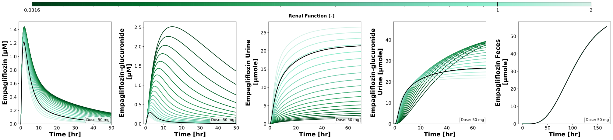
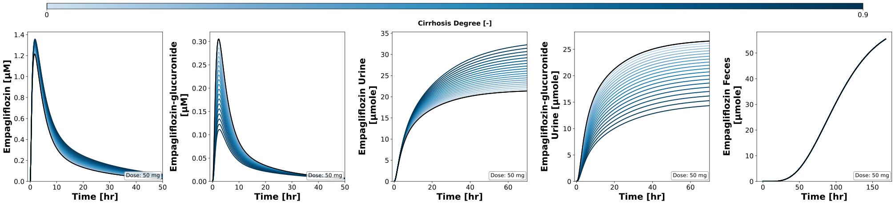
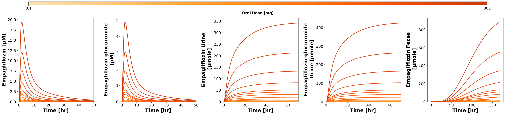
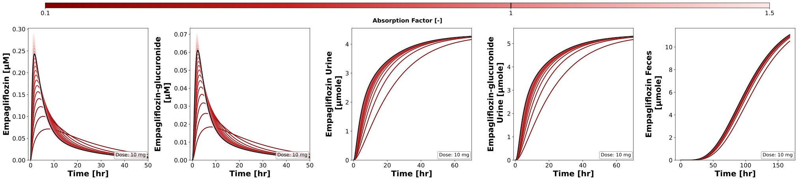
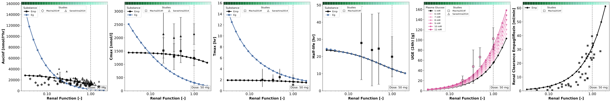
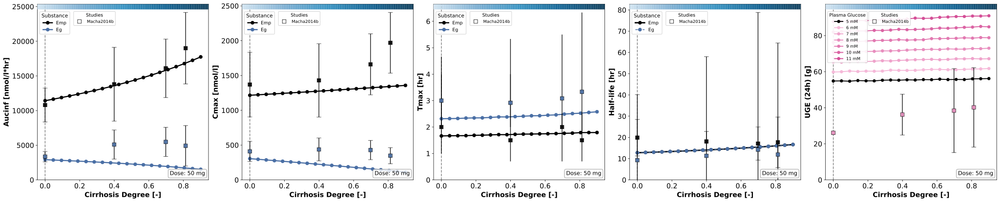
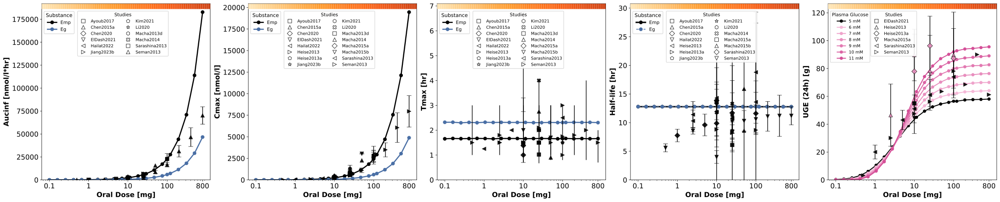
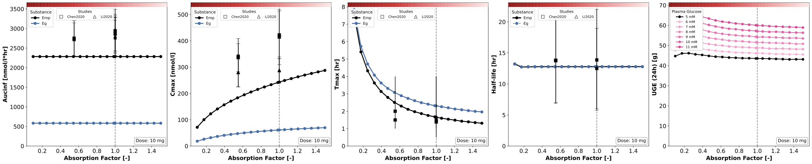

Overview
Models
| model | source |
|---|---|
| model | empagliflozin_body_flat.xml |
Datasets
The experiment has no datasets.
Figures (8)
















Code
"""Parameter scans of the empagliflozin model.
The renal function, the degree of cirrhosis, the oral dose and the absorption
(food effect) are scanned after a single oral dose of empagliflozin, every scan
again for fasting plasma glucose levels from 5 to 11 mM for the urinary glucose
excretion (UGE). The matplotlib figures show the timecourses of the scans and
the pharmacokinetic parameters of `empagliflozin_pk` together with the data of
the studies.
In a run over the draws of the fitted parameters (`run_simulation
pkdb_models.models.empagliflozin --uncertainty`) every point of a scan is
simulated for every draw; the figures draw the median of the draws with the
band of their quantiles.
"""
from collections.abc import Callable
from functools import partial
from pathlib import Path
from typing import Any, ClassVar, Literal, NotRequired, TypedDict, override
import matplotlib.pyplot as plt
import numpy as np
import pandas as pd
from matplotlib.axes import Axes
from matplotlib.cm import ScalarMappable
from matplotlib.colors import Colormap, LinearSegmentedColormap, LogNorm, Normalize
from matplotlib.lines import Line2D
from matplotlib.ticker import ScalarFormatter
from mpl_toolkits.axes_grid1.inset_locator import inset_axes
from pint.errors import DimensionalityError
from pkpdsim.scan import point_band, point_timecourse, scan_dimensions, start_values
from sbmlsim import Q
from sbmlsim.plot.serialization_matplotlib import FigureMPL
from sbmlsim.result import ScanResult
from sbmlsim.simulation import Dimension, Scan, Simulation
from sbmlsim.units import Quantity
from pkdb_models.models.empagliflozin import DATA_PATH_EMPAGLIFLOZIN, MODEL
from pkdb_models.models.empagliflozin.empagliflozin_pk import summarize
from pkdb_models.models.empagliflozin.experiments.base_experiment import (
EmpagliflozinSimulationExperiment,
)
from pkdb_models.models.empagliflozin.models.fits import FITS
#: pharmacokinetic parameters and UGE of the studies, one file per scan
STUDY_DATA_PATH = Path(__file__).parent / "study_data"
#: markers of the studies, in the order of the studies in the data
STUDY_MARKERS = ("s", "^", "D", "v", "<", ">", "p", "*", "h", "X")
class ScanSpec(TypedDict):
"""Definition of a single parameter scan."""
parameter: str
#: value of the reference simulation; the dose scan has none
default: NotRequired[float]
range: np.ndarray
scale: Literal["linear", "log"]
#: name of the colormap property of the experiment
colormap: str
units: str
label: str
class EmpagliflozinParameterScan(EmpagliflozinSimulationExperiment):
"""Scan the effect of parameters on pharmacokinetics and pharmacodynamics."""
#: pharmacokinetic parameters of the scans by simulation key, set by
#: `figures_mpl`
pk_dfs: dict[str, pd.DataFrame]
study_data_files: ClassVar[dict[str, str]] = {
"renal_scan": str(STUDY_DATA_PATH / "renal_parameters.tsv"),
"hepatic_scan": str(STUDY_DATA_PATH / "hepatic_parameters.tsv"),
"dose_scan": str(STUDY_DATA_PATH / "dose_parameters.tsv"),
"food_scan": str(STUDY_DATA_PATH / "food_parameters.tsv"),
}
# the individual data of the studies, from the data of the model
SARASHINA2014_FILE = str(
DATA_PATH_EMPAGLIFLOZIN / "Sarashina2014" / ".Sarashina2014_Fig2.tsv"
)
MACHA2014F_FILE = str(
DATA_PATH_EMPAGLIFLOZIN / "Macha2014f" / ".Macha2014f_Fig2.tsv"
)
num_points = 20
glucoses: ClassVar[list[int]] = [5, 6, 7, 8, 9, 10, 11] # [mM]
scan_end = 24 * 60 * 7 # [min], one week
#: the output times of a run over the draws [min]: every 15 min in the
#: first day (absorption, maximum and the UGE at 24 hr), every hour after
#: it. The grid of `steps` for every draw of every point of the 32 scans
#: would need about 40 GB, this grid 2 GB.
times_uncertainty: ClassVar[tuple[float, ...]] = tuple(
np.unique(
np.concatenate([np.linspace(0, 1440, 97), np.linspace(1440, scan_end, 145)])
).tolist()
)
#: the opacity of the bands of the draws of the fitted parameters
band_alpha = 0.15
substance_colors: ClassVar[dict[str, str]] = {
"empagliflozin": "black",
"empagliflozin-glucuronide": "#4A6FA5",
}
# labels, line styles and line widths of the substances in the panels of the
# pharmacokinetic parameters (the styles only for the half-life)
substance_labels: ClassVar[dict[str, str]] = {
"empagliflozin": "Emp",
"empagliflozin-glucuronide": "Eg",
}
substance_linestyles: ClassVar[dict[str, str]] = {
"empagliflozin": "-",
"empagliflozin-glucuronide": "--",
}
substance_linewidths: ClassVar[dict[str, float]] = {
"empagliflozin": 3.0,
"empagliflozin-glucuronide": 1.5,
}
# Maps condition labels (lower-cased) in the food TSV to the x-axis values of
# the factor of the absorption rate: fasted/fasting is no effect (1.0), fed
# the fitted effect of food of the model (`GU__FED_f_absorption`).
food_map: ClassVar[dict[str, float]] = {
"fasted": 1.0,
"fasting": 1.0,
"fed": FITS["GU__FED_f_absorption"].value,
}
scan_map: ClassVar[dict[str, ScanSpec]] = {
"renal_scan": {
"parameter": "KI__f_renal_function",
"default": 1.0,
"range": np.sort(
np.append(np.logspace(-1.5, np.log10(2.0), num=num_points), [1.0])
),
"scale": "log",
"colormap": "renal_cmap",
"units": "dimensionless",
"label": "Renal Function [-]",
},
"hepatic_scan": {
"parameter": "f_cirrhosis",
"default": 0.0,
"range": np.linspace(0, 0.9, num=num_points),
"scale": "linear",
"colormap": "cirrhosis_cmap",
"units": "dimensionless",
"label": "Cirrhosis Degree [-]",
},
"dose_scan": {
"parameter": "PODOSE_emp",
"range": np.sort(
np.append(
np.logspace(np.log10(0.1), np.log10(800), num=num_points), [100]
)
),
"scale": "log",
"colormap": "doses_cmap",
"units": "mg",
"label": "Oral Dose [mg]",
},
"food_scan": {
# the effect of food on the absorption rate, in the fed state
"parameter": "GU__FED_f_absorption",
"default": 1.0,
"range": np.sort(np.append(np.linspace(0.1, 1.5, num=num_points), [1.0])),
"scale": "linear",
"colormap": "food_cmap",
"units": "dimensionless",
"label": "Absorption Factor [-]",
},
}
#: further changes of the scans: the food scan is in the fed state
scan_changes: ClassVar[dict[str, dict[str, float]]] = {
"food_scan": {"GU__fed": 1.0},
}
#: oral dose of the scans [mg]; the dose scan scans the dose
scan_doses: ClassVar[dict[str, float]] = {
"renal_scan": 50,
"hepatic_scan": 50,
"food_scan": 10,
}
@property
def food_cmap(self) -> LinearSegmentedColormap:
"""Colormap ranging from dark deep red (low absorption) to light pastel red (high absorption)."""
return LinearSegmentedColormap.from_list(
"food_cmap",
["#800100", "#c22223", "#e78789", "#fbe8e6"],
)
@staticmethod
def _scan_name(scan_key: str) -> str:
"""Name of a scan in the keys of simulations and figures, e.g. `renal`."""
return scan_key.removesuffix("_scan")
def _sim_key(self, scan_key: str) -> str:
"""Key of the simulation of a scan, e.g. `scan_po_renal`."""
return f"scan_po_{self._scan_name(scan_key)}"
def _gfr_bsa_to_f_renal(self, gfr_bsa: np.ndarray) -> np.ndarray:
"""Renal function of a GFR normalized to the body surface area."""
return np.asarray(gfr_bsa, dtype=float) / self.gfr_healthy
@override
def simulations(self) -> dict[str, Scan]:
scans: dict[str, Scan] = {}
for scan_key in self.scan_map:
scans[self._sim_key(scan_key)] = self._scan(scan_key)
# scans with different glucose levels for UGE
for glc in self.glucoses:
for scan_key in self.scan_map:
scans[f"{self._sim_key(scan_key)}_glc{glc}"] = self._scan(
scan_key, changes={"[KI__fpg]": Q(glc, "mM")}
)
return scans
def _scan(self, scan_key: str, changes: dict[str, Quantity] | None = None) -> Scan:
"""Scan of a parameter after a single oral dose.
Args:
scan_key: key of the scan in `scan_map`.
changes: further changes of the simulations.
"""
scan_data = self.scan_map[scan_key]
dose = (
{"PODOSE_emp": Q(self.scan_doses[scan_key], "mg")}
if scan_key in self.scan_doses
else {}
)
grid: dict[str, Any] = (
{} if self.uncertainty is None else {"times": self.times_uncertainty}
)
return Scan(
simulation=Simulation(
time_unit="min",
end=self.scan_end,
**grid,
preinit_changes={
**self.default_changes(),
**dose,
**{
pid: Q(value, "dimensionless")
for pid, value in self.scan_changes.get(scan_key, {}).items()
},
**(changes or {}),
},
),
dimensions=[
Dimension(
"dim_scan",
values={
scan_data["parameter"]: Q(
scan_data["range"], scan_data["units"]
)
},
),
],
)
@override
def figures_mpl(self) -> dict[str, FigureMPL]:
# the pharmacokinetic parameters of the scans (not of the scans of the
# glucose levels, which give the UGE), per draw in a run over the draws
self.pk_dfs = self.calculate_empagliflozin_pk(
scans=[self._sim_key(scan_key) for scan_key in self.scan_map]
)
return {
**self.figures_mpl_timecourses(),
**self.figures_mpl_pharmacokinetics(),
}
def figures_mpl_timecourses(self) -> dict[str, FigureMPL]:
"""Timecourse plots for key variables as parameter scan."""
return {
f"fig_emp_po__{self._scan_name(scan_key)}__timecourse": (
self._plot_timecourse_scan(scan_key)
)
for scan_key in self.scan_map
}
def figures_mpl_pharmacokinetics(self) -> dict[str, FigureMPL]:
"""Visualize dependency of pharmacokinetics parameters."""
pk_parameters = ["auc_inf_obs", "cmax", "tmax", "thalf"]
# one figure per scan
return {
f"fig_emp_po__{self._scan_name(scan_key)}": self._plot_scan_combined(
scan_key, pk_parameters
)
for scan_key in self.scan_map
}
def _across(self) -> str | None:
"""Get the dimension of the draws of the fitted parameters, `None` without."""
return None if self.uncertainty is None else self.uncertainty.id
def _scandim(self, res: ScanResult) -> str:
"""Get the dimension of a scan, the one besides the draws."""
(scandim,) = scan_dimensions(res, self._across())
return scandim
def _scanned(self, res: ScanResult, parameter_id: str) -> Quantity:
"""Get the values of the scanned parameter at the points of a scan."""
values = start_values(res, parameter_id)
across = self._across()
if across is not None:
values = values.isel({across: 0})
return Q(values.values, res.units[parameter_id])
def _band(
self, res: ScanResult, sid: str, point: dict[str, int]
) -> tuple[np.ndarray, np.ndarray, np.ndarray, np.ndarray]:
"""Get the timecourse of a point of a scan with the band of its draws.
Returns:
The time, the lower quantile, the values (the median of the draws in
a run over them) and the upper quantile, the values without draws.
"""
run = self.uncertainty
if run is None:
time, values = point_timecourse(res, sid, **point)
return time, values, values, values
return point_band(res, sid, across=run.id, quantiles=run.quantiles, **point)
def _summary(
self, df: pd.DataFrame, key: str, unit: str
) -> tuple[Quantity, Quantity, Quantity]:
"""Get a parameter at the points of a scan, the median and the band of the draws.
Returns:
The values (the median of the draws in a run over them), and the
lower and the upper quantile, the values without draws.
"""
run = self.uncertainty
if run is None:
values = Q(df[key].to_numpy(dtype=float), unit)
return values, values, values
summary = summarize(df, key, run.quantiles)
median, lower, upper = (
Q(summary[column].to_numpy(), unit)
for column in ["median", "lower", "upper"]
)
return median, lower, upper
def _colormap(self, scan_data: ScanSpec) -> Colormap:
"""Colormap of a scan, a property of the experiment."""
return getattr(self, scan_data["colormap"])
@staticmethod
def _norm(scan_data: ScanSpec) -> Normalize:
"""Normalization of the colors of a scan to the scanned range."""
rmin, rmax = scan_data["range"][0], scan_data["range"][-1]
if scan_data["scale"] == "linear":
return Normalize(vmin=rmin, vmax=rmax, clip=False)
if scan_data["scale"] == "log":
return LogNorm(vmin=rmin, vmax=rmax, clip=False)
raise ValueError(f"Unsupported scale: '{scan_data['scale']}'")
@staticmethod
def _color_value(
value: float, rmin: float, rmax: float, scale: Literal["linear", "log"]
) -> float:
"""Position of a value of a scan in the scanned range, in [0, 1]."""
if scale == "linear":
return (value - rmin) / np.abs(rmax - rmin)
if scale == "log":
return (np.log10(value) - np.log10(rmin)) / np.abs(
np.log10(rmax) - np.log10(rmin)
)
raise ValueError(f"Unsupported scale: '{scale}'")
@staticmethod
def _dose_mg(res: ScanResult) -> float:
"""Oral dose of the first simulation of a scan [mg]."""
values = start_values(res, "PODOSE_emp").values
dose = Q(values.flat[0], res.units["PODOSE_emp"])
return dose.to("mg").magnitude
def _add_dose_annotation(self, ax: Axes, res: ScanResult) -> None:
"""Annotate the oral dose of a scan in the lower right corner."""
ax.text(
0.98,
0.02,
f"Dose: {self._dose_mg(res):.0f} mg",
transform=ax.transAxes,
fontsize=12,
verticalalignment="bottom",
horizontalalignment="right",
bbox={
"boxstyle": "round",
"facecolor": "white",
"alpha": 0.8,
"edgecolor": "gray",
},
)
@staticmethod
def _set_log_xaxis(ax: Axes, scan_key: str) -> None:
"""Log scale of the x-axis with plain numbers as labels."""
ax.set_xscale("log")
formatter = ScalarFormatter()
formatter.set_scientific(False)
ax.xaxis.set_major_formatter(formatter)
if scan_key == "dose_scan":
ax.set_xticks([0.1, 1, 10, 100, 800])
ax.set_xticklabels(["0.1", "1", "10", "100", "800"])
@staticmethod
def _study_legend_handles(study_markers: dict[str, str]) -> list[Line2D]:
"""Legend handles of the studies, sorted by study."""
return [
Line2D(
[],
[],
marker=marker,
color="white",
markerfacecolor="white",
markeredgecolor="black",
markeredgewidth=0.8,
markersize=8,
linestyle="",
label=study,
)
for study, marker in sorted(study_markers.items())
]
def _plot_timecourse_scan(self, scan_key: str) -> FigureMPL:
"""Create timecourse plot for a parameter scan."""
sids = [
"[Cve_emp]",
"[Cve_eg]",
"Aurine_emp",
"Aurine_eg",
"Afeces_emp",
]
scan_data = self.scan_map[scan_key]
scan_range = scan_data["range"]
rmin, rmax = scan_range[0], scan_range[-1]
cmap = self._colormap(scan_data)
# 1 row x multiple columns
nrows = 1
ncols = len(sids)
figsize = (6 * ncols, 6 * nrows)
f, axes = plt.subplots(
nrows=nrows,
ncols=ncols,
figsize=figsize,
sharey=False,
sharex=False,
dpi=150,
squeeze=False,
)
f.subplots_adjust(
top=0.88, bottom=0.1, left=0.08, right=0.98, hspace=0.3, wspace=0.35
)
# get data
res = self.results[f"task_{self._sim_key(scan_key)}"]
units = res.units
# scanned dimension
scandim = self._scandim(res)
par_vec = self._scanned(res, scan_data["parameter"])
for k_sid, sid in enumerate(sids):
ax: Axes = axes[0, k_sid]
ymax = 0.0
# the reference simulation (the dose scan has none)
t_vec_default = c_vec_default = None
for k_par, par in enumerate(par_vec):
time, lower, values, upper = self._band(res, sid, {scandim: k_par})
t_vec = Q(time, units["time"]).to(self.units["time"])
c_vec = Q(values, units[sid]).to(self.units[sid])
c_upper = Q(upper, units[sid]).to(self.units[sid])
# update ymax, with the band of the draws
cmax = np.nanmax(c_upper.magnitude)
if cmax > ymax:
ymax = cmax
if scan_key != "dose_scan" and np.isclose(
scan_data["default"], par.magnitude
):
color = "black"
t_vec_default, c_vec_default = t_vec, c_vec
else:
# color by the position in the scanned range
color = cmap(
self._color_value(par.magnitude, rmin, rmax, scan_data["scale"])
)
if self.uncertainty is not None:
ax.fill_between(
t_vec.magnitude,
Q(lower, units[sid]).to(self.units[sid]).magnitude,
c_upper.magnitude,
color=color,
alpha=self.band_alpha,
linewidth=0,
)
ax.plot(
t_vec.magnitude,
c_vec.magnitude,
color=color,
linewidth=2.0,
)
# reference simulation on top
if t_vec_default is not None and c_vec_default is not None:
ax.plot(
t_vec_default.magnitude,
c_vec_default.magnitude,
color="black",
linewidth=2.0,
)
ax.set_xlabel(
f"{self.label_time} [{self.units['time']}]",
fontdict=self.font,
)
ax.tick_params(axis="x", labelsize=self.tick_font_size)
ax.tick_params(axis="y", labelsize=self.tick_font_size)
ax.set_ylabel(
f"{self.labels[sid]} [{self.units[sid]}]",
fontdict=self.font,
)
ax.set_ylim(bottom=0.0, top=1.05 * ymax)
if k_sid in [0, 1]:
ax.set_xlim(left=-1, right=50)
elif k_sid in [2, 3]:
ax.set_xlim(left=-1, right=70)
if scan_key in self.scan_doses:
self._add_dose_annotation(ax, res)
# add colorbar
cb_ax = f.add_axes(rect=(0.1, 1.0, 0.85, 0.03))
cb_ax.set_in_layout(True)
cbar = f.colorbar(
ScalarMappable(norm=self._norm(scan_data), cmap=cmap),
cax=cb_ax,
orientation="horizontal",
)
# the gradient as vector cells: matplotlib rasterizes it into an
# embedded image, which some SVG viewers do not show; the edges of
# the cells in their color close the seams between them
if cbar.solids is not None:
cbar.solids.set_rasterized(False)
cbar.solids.set_edgecolor("face")
# ticks
ticks = [rmin, rmax]
if scan_key != "dose_scan" and scan_data["default"] not in ticks:
ticks.append(scan_data["default"])
ticks = sorted(ticks)
cbar.set_ticks(ticks)
# three significant digits, e.g. 0.0316 for the lowest renal function
# and 0.1 for the lowest dose
tick_labels = [f"{tick:.3g}" for tick in ticks]
cbar.set_ticklabels(tick_labels, size=15, weight="normal")
cbar.ax.set_xlabel(scan_data["label"], size=15, weight="bold")
if scan_key != "dose_scan":
cbar.ax.axvline(x=scan_data["default"], color="black", linewidth=2)
return f
def _plot_scan_combined(self, scan_key: str, pk_parameters: list[str]) -> FigureMPL:
"""Create combined figure with all PK parameters, UGE, and (renal only) cl_renal."""
is_renal = scan_key == "renal_scan"
ncols = 6 if is_renal else 5
figsize = (6 * ncols, 6)
f, axes = plt.subplots(
nrows=1,
ncols=ncols,
figsize=figsize,
dpi=150,
layout="constrained",
squeeze=False,
)
axes = axes.flatten()
# Columns 0-3: PK parameters (auc_inf_obs, cmax, tmax, thalf)
for k, pk_key in enumerate(pk_parameters):
self._plot_pk_subplot(axes[k], scan_key, pk_key)
# Column 4: UGE
self._plot_uge_subplot(axes[4], scan_key)
# Column 5 (renal only): cl_renal
if is_renal:
self._plot_cl_renal_subplot(axes[5], scan_key)
return f
def _molar_mass_for_substance(self, substance: str) -> Quantity | None:
"""Molar mass of a substance of the study data, None for an unknown one."""
return {
"empagliflozin": self.Mr.emp,
"empagliflozin-glucuronide": self.Mr.eg,
"eg": self.Mr.eg,
"total empagliflozin": self.Mr.emp,
}.get(substance.lower())
def _convert_pk_quantity(
self, y: Quantity, pk_key: str, substance: str
) -> Quantity:
"""Convert to the unit of a pharmacokinetic parameter.
A mass is converted to an amount of substance (and an amount to a mass)
with the molar mass of the substance.
"""
target_unit = self.pk_units[pk_key]
try:
return y.to(target_unit)
except DimensionalityError:
molar_mass = self._molar_mass_for_substance(substance)
if molar_mass is None:
raise
try:
return (y / molar_mass).to(target_unit)
except DimensionalityError:
return (y * molar_mass).to(target_unit)
def _convert_study_value_to_target_unit(
self, value: float, unit_str: str, pk_key: str, substance: str
) -> float:
"""Convert a study data value from its TSV unit to the target pk_unit."""
return self._convert_pk_quantity(
Q(value, unit_str), pk_key, substance
).magnitude
def _study_value(
self,
value: float,
unit: str | float | None,
pk_key: str,
substance: str,
factor: float,
) -> float:
"""Value of the study data in the unit of the parameter, scaled by a factor.
A value without unit is used as it is.
"""
if pd.notna(unit):
y = self._convert_study_value_to_target_unit(
value, str(unit), pk_key, substance
)
else:
y = float(value)
return y * factor
def _condition_map(self, scan_key: str) -> dict[str, float]:
"""Position of the conditions of the study data (lower case) on the x-axis.
The dose scan has no conditions, the dose is the position.
"""
if scan_key == "renal_scan":
return {
"normal": self.renal_map["Normal renal function"],
"mild": self.renal_map["Mild renal impairment"],
"moderate": self.renal_map["Moderate renal impairment"],
"severe": self.renal_map["Severe renal impairment"],
}
if scan_key == "hepatic_scan":
return {
"normal": self.cirrhosis_map["Control"],
"mild": self.cirrhosis_map["Mild cirrhosis"],
"moderate": self.cirrhosis_map["Moderate cirrhosis"],
"severe": self.cirrhosis_map["Severe cirrhosis"],
}
if scan_key == "food_scan":
# fed/fasted condition labels at their f_absorption x-axis positions
return dict(self.food_map)
return {}
@staticmethod
def _condition(row: pd.Series) -> str | None:
"""Condition of a row of the study data in lower case."""
condition = row.get("condition", None)
return condition.lower() if pd.notna(condition) else None
@staticmethod
def _study_markers(df: pd.DataFrame) -> dict[str, str]:
"""Markers of the studies of the study data."""
return {
study: STUDY_MARKERS[i % len(STUDY_MARKERS)]
for i, study in enumerate(df["study"].unique())
}
def _add_study_data_to_plot(
self, ax: Axes, scan_key: str, substance: str, parameter: str
) -> tuple[float | None, dict[str, str]]:
"""Add study data points to PK parameter plots.
For the scans with a fixed dose, `cmax` and `auc_inf_obs` of the studies
are scaled to the dose of the scan, the other parameters are only shown
for studies with the dose of the scan.
Returns:
The maximum of the plotted data (None without data of the parameter)
and the markers of the studies.
"""
df = pd.read_csv(self.study_data_files[scan_key], sep="\t", comment="#")
df = df[(df["substance"] == substance) & (df["parameter"] == parameter)]
if len(df) == 0:
return None, {}
# dose of the scan for the scaling (not used by the dose scan)
sim_dose = self._dose_mg(self.results[f"task_{self._sim_key(scan_key)}"])
condition_map = self._condition_map(scan_key)
# parameters which are scaled to the dose of the scan
scalable_params = ["cmax", "auc_inf_obs"]
study_marker_map = self._study_markers(df)
substance_color = self.substance_colors.get(substance, "black")
# Track maximum y-value for axis scaling
max_y = 0.0
for _, row in df.iterrows():
if scan_key == "dose_scan":
# the position is the dose, no scaling
x_pos = row["dose"]
factor = 1.0
else:
condition = self._condition(row)
if condition not in condition_map:
continue
x_pos = condition_map[condition]
# Scale PK values if study dose differs from simulation dose
study_dose = row.get("dose", np.nan)
dose_ratio = (
sim_dose / study_dose
if pd.notna(study_dose) and study_dose > 0
else 1.0
)
if (
pd.notna(study_dose)
and study_dose != sim_dose
and parameter not in scalable_params
):
continue
factor = dose_ratio if parameter in scalable_params else 1.0
# the unit of the value is the unit of the row of the TSV
convert = partial(
self._study_value,
unit=row.get("unit", None),
pk_key=parameter,
substance=substance,
factor=factor,
)
y_top = _plot_study_row(
ax,
row,
x_pos,
marker=study_marker_map.get(row["study"], "s"),
color=substance_color,
convert=convert,
)
if y_top is not None:
max_y = max(max_y, y_top)
return max_y, study_marker_map
def _add_uge_study_data_to_plot(
self, ax: Axes, scan_key: str
) -> tuple[float | None, dict[str, str]]:
"""Add study data points to UGE plots.
For the scans with a fixed dose only the data of the dose of the scan is
shown; the color is the glucose level of the subjects (diabetes status).
Returns:
The maximum of the plotted data (None without UGE data) and the
markers of the studies.
"""
df = pd.read_csv(self.study_data_files[scan_key], sep="\t", comment="#")
df = df[df["parameter"] == "UGE_24"]
if len(df) == 0:
return None, {}
# dose of the scan (not used by the dose scan)
sim_dose = self._dose_mg(
self.results[f"task_{self._sim_key(scan_key)}_glc{self.glucoses[0]}"]
)
condition_map = self._condition_map(scan_key)
# glucose level [mM] of the subjects by diabetes status
diabetes_map = {
"N": 5, # Normal/healthy
"T2DM": 8, # Type 2 diabetes
"T1DM": 8, # Type 1 diabetes
}
study_marker_map = self._study_markers(df)
max_y = 0.0
for _, row in df.iterrows():
study_dose = row.get("dose", np.nan)
if scan_key == "dose_scan":
x_pos = row["dose"]
else:
condition = self._condition(row)
if condition not in condition_map:
continue
# only the data of the dose of the scan, for the food scan also
# data without dose
if scan_key == "food_scan":
if pd.notna(study_dose) and study_dose != sim_dose:
continue
elif pd.isna(study_dose) or study_dose != sim_dose:
continue
x_pos = condition_map[condition]
diabetes_status = row.get("diabetes", "N")
if pd.isna(diabetes_status):
diabetes_status = "N"
glucose_level = diabetes_map.get(diabetes_status, 5)
face_color = self.glucose_colors.get(glucose_level, self.glucose_colors[5])
y_top = _plot_study_row(
ax,
row,
x_pos,
marker=study_marker_map.get(row["study"], "s"),
color=face_color,
convert=float,
)
if y_top is not None:
max_y = max(max_y, y_top)
return max_y, study_marker_map
def _plot_pk_subplot(self, ax: Axes, scan_key: str, pk_key: str) -> None:
"""Plot a single PK parameter subplot with both substances."""
scan_data = self.scan_map[scan_key]
sim_key = self._sim_key(scan_key)
# Only show reference line for non-dose scans
if scan_key != "dose_scan":
ax.axvline(
x=scan_data["default"], color="grey", linestyle="--", linewidth=1.5
)
res = self.results[f"task_{sim_key}"]
x_vec = self._scanned(res, scan_data["parameter"])
substances = ["empagliflozin", "empagliflozin-glucuronide"]
ymax = 0.0
# Plot both substances
df = self.pk_dfs[sim_key]
for substance in substances:
df_sub = df[df.substance == substance]
if len(df_sub) == 0:
continue
y, y_lower, y_upper = (
self._convert_pk_quantity(v, pk_key, substance)
for v in self._summary(
df_sub, pk_key, df_sub[f"{pk_key}_unit"].to_numpy()[0]
)
)
color = self.substance_colors[substance]
if self.uncertainty is not None:
ax.fill_between(
x_vec.magnitude,
y_lower.magnitude,
y_upper.magnitude,
color=color,
alpha=self.band_alpha,
linewidth=0,
)
# Plot simulation line
is_thalf = pk_key == "thalf"
ax.plot(
x_vec.magnitude,
y.magnitude,
marker="o",
color=color,
markeredgecolor=color,
linestyle=self.substance_linestyles[substance] if is_thalf else "-",
linewidth=self.substance_linewidths[substance] if is_thalf else 2.5,
markersize=7,
label=self.substance_labels[substance],
)
ymax = max(ymax, np.nanmax(y_upper.magnitude))
# Add study data for all substances
study_markers: dict[str, str] = {}
study_max_y = 0.0
if scan_key in self.study_data_files:
for substance in substances:
max_y_sub, study_info = self._add_study_data_to_plot(
ax, scan_key, substance, pk_key
)
if max_y_sub is not None:
study_max_y = max(study_max_y, max_y_sub)
study_markers.update(study_info)
# Sarashina2014 individual scatter
self._add_sarashina2014_aucinf_scatter(ax, scan_key, pk_key, study_markers)
if "Sarashina2014" in study_markers:
study_max_y = max(study_max_y, ax.get_ylim()[1])
# Macha2014f individual scatter (renal scan / auc_inf_obs only)
self._add_macha2014f_aucinf_scatter(ax, scan_key, pk_key, study_markers)
ymax = max(ymax, study_max_y)
# Formatting
ax.tick_params(axis="x", labelsize=self.tick_font_size)
ax.tick_params(axis="y", labelsize=self.tick_font_size)
ax.set_xlabel(scan_data["label"], fontdict=self.scan_font)
ax.set_ylabel(
f"{self.pk_labels[pk_key].capitalize()} [{self.pk_units[pk_key]}]",
fontdict=self.scan_font,
)
ax.set_ylim(bottom=0.0, top=1.05 * ymax)
if scan_data["scale"] == "log":
self._set_log_xaxis(ax, scan_key)
if scan_key in self.scan_doses:
self._add_dose_annotation(ax, res)
# Add legends
handles, labels = ax.get_legend_handles_labels()
if labels:
substance_labels = list(self.substance_labels.values())
substance_handles = [
handle
for handle, label in zip(handles, labels, strict=True)
if label in substance_labels
]
substance_leg_labels = [
label for label in labels if label in substance_labels
]
if substance_handles:
leg1 = ax.legend(
substance_handles,
substance_leg_labels,
title="Substance",
loc="upper left",
bbox_to_anchor=(0, 0.97),
fontsize=10,
title_fontsize=11,
framealpha=0.9,
)
ax.add_artist(leg1)
if study_markers:
ax.legend(
self._study_legend_handles(study_markers),
sorted(study_markers),
title="Studies",
loc="upper left",
bbox_to_anchor=(0.20, 0.97),
fontsize=9,
title_fontsize=10,
framealpha=0.9,
ncol=2,
)
self._add_colorbar_strip(ax, scan_data)
def _plot_uge_subplot(self, ax: Axes, scan_key: str) -> None:
"""Plot UGE subplot with multiple glucose levels."""
scan_data = self.scan_map[scan_key]
sim_key = self._sim_key(scan_key)
if scan_key != "dose_scan":
ax.axvline(
x=scan_data["default"], color="grey", linestyle="--", linewidth=1.5
)
# Get x-axis values
res_sample = self.results[f"task_{sim_key}_glc{self.glucoses[0]}"]
x_vec = self._scanned(res_sample, scan_data["parameter"])
# Plot UGE for each glucose level
for glc in self.glucoses:
res_glc = self.results[f"task_{sim_key}_glc{glc}"]
units = res_glc.units
# UGE values across scan dimension, at 24 hr (the time of the
# simulations is in min), the median and the band of the draws
scandim = self._scandim(res_glc)
uge = np.array(
[
[v[np.argmin(np.abs(time - 1440))] for v in (lower, median, upper)]
for time, lower, median, upper in (
self._band(res_glc, "KI__UGE", {scandim: k_par})
for k_par in range(len(x_vec.magnitude))
)
]
)
uge = Q(uge, units["KI__UGE"]).to(self.units["KI__UGE"]).magnitude
uge_values = uge[:, 1]
if self.uncertainty is not None:
ax.fill_between(
x_vec.magnitude,
uge[:, 0],
uge[:, 2],
color=self.glucose_colors[glc],
alpha=self.band_alpha,
linewidth=0,
)
ax.plot(
x_vec.magnitude,
uge_values,
marker="o",
linestyle="-",
color=self.glucose_colors[glc],
linewidth=2,
markersize=6,
label=f"{glc} mM",
)
# Formatting
ax.set_xlabel(scan_data["label"], fontdict=self.scan_font)
ax.set_ylabel(
f"{self.labels['KI__UGE']} (24h) [{self.units['KI__UGE']}]",
fontdict=self.scan_font,
)
ax.tick_params(axis="x", labelsize=self.tick_font_size)
ax.tick_params(axis="y", labelsize=self.tick_font_size)
ymax = ax.get_ylim()[1]
# Add study data if available
study_markers: dict[str, str] = {}
if scan_key in self.study_data_files:
study_max_y, study_info = self._add_uge_study_data_to_plot(ax, scan_key)
if study_max_y is not None:
ymax = max(ymax, study_max_y)
study_markers.update(study_info)
# the individual UGE0-24 of Macha2014f (Fig2C) is not drawn: its unit
# (nmol) is wrong and no unit gives the means of Table 2 (102 g in
# normal renal function, at most 26000 in the figure)
ax.set_ylim(bottom=0.0, top=1.05 * ymax)
if scan_data["scale"] == "log":
self._set_log_xaxis(ax, scan_key)
if scan_key in self.scan_doses:
self._add_dose_annotation(ax, res_sample)
# Add legends
handles, labels = ax.get_legend_handles_labels()
glucose_handles = [
handle
for handle, label in zip(handles, labels, strict=True)
if "mM" in label
]
glucose_labels = [label for label in labels if "mM" in label]
if glucose_handles:
leg1 = ax.legend(
glucose_handles,
glucose_labels,
title="Plasma Glucose",
loc="upper left",
bbox_to_anchor=(0, 0.97),
fontsize=9,
title_fontsize=10,
framealpha=0.9,
)
ax.add_artist(leg1)
if study_markers:
ax.legend(
self._study_legend_handles(study_markers),
sorted(study_markers),
title="Studies",
loc="upper left",
bbox_to_anchor=(0.24, 0.97),
fontsize=9,
title_fontsize=10,
framealpha=0.9,
)
self._add_colorbar_strip(ax, scan_data)
def _add_colorbar_strip(self, ax: Axes, scan_data: ScanSpec) -> None:
"""Add a colorbar strip at the top of a subplot."""
height_frac = 0.03
range_vals = scan_data["range"]
rmin, rmax = range_vals[0], range_vals[-1]
# Create inset axes for colorbar strip
strip_ax = inset_axes(
ax,
width="100%",
height=f"{height_frac * 100:.2f}%",
loc="upper center",
borderpad=0,
)
# Draw colorbar gradient
if scan_data["scale"] == "log":
xs = np.geomspace(max(rmin, 1e-12), rmax, 256)
else:
xs = np.linspace(rmin, rmax, 256)
# vector cells, not an image: an image is embedded as a raster in the
# SVG, which some viewers do not show
strip_ax.pcolormesh(
np.linspace(0, 1, len(xs) + 1),
[0, 1],
xs[np.newaxis, :],
cmap=self._colormap(scan_data),
norm=self._norm(scan_data),
edgecolors="face",
linewidth=0,
rasterized=False,
)
strip_ax.set_xlim(0, 1)
strip_ax.set_ylim(0, 1)
strip_ax.set_axis_off()
strip_ax.set_zorder(ax.get_zorder() + 1)
def _add_sarashina2014_aucinf_scatter(
self, ax: Axes, scan_key: str, pk_key: str, study_markers: dict[str, str]
) -> None:
"""Plot individual AUC-inf scatter (Sarashina2014) on renal-scan AUC subplot."""
if scan_key != "renal_scan" or pk_key != "auc_inf_obs":
return
# the AUC of the 25 mg dose of the study is scaled to the dose of the scan
study_dose = 25.0 # [mg]
dose_scale = self.scan_doses[scan_key] / study_dose
df = pd.read_csv(self.SARASHINA2014_FILE, sep="\t", comment="#")
df_auc = df[
(df["x_measurement_type"] == "gfr")
& (df["x_substance"] == "empagliflozin")
& (df["y_measurement_type"] == "auc_inf")
]
if df_auc.empty:
return
x_vals = self._gfr_bsa_to_f_renal(df_auc["x_value"].astype(float).to_numpy())
y_qty = Q(df_auc["y_value"].astype(float).to_numpy(), "nmol/l*hr")
y_vals = (
self._convert_pk_quantity(y_qty, pk_key, "empagliflozin").magnitude
* dose_scale
)
study_name = "Sarashina2014"
marker = "^"
study_markers[study_name] = marker
ax.scatter(
x_vals,
y_vals,
marker=marker,
facecolors=self.substance_colors["empagliflozin"],
edgecolors="black",
linewidths=0.8,
s=50,
alpha=0.7,
zorder=5,
label=study_name,
)
def _plot_cl_renal_subplot(self, ax: Axes, scan_key: str) -> None:
"""Plot renal clearance vs renal function (simulation + Macha2014f scatter)."""
scan_data = self.scan_map[scan_key]
sim_key = self._sim_key(scan_key)
# Reference line at default renal function
ax.axvline(x=scan_data["default"], color="grey", linestyle="--", linewidth=1.5)
res = self.results[f"task_{sim_key}"]
x_values = self._scanned(res, scan_data["parameter"]).magnitude
df = self.pk_dfs[sim_key]
df_sub = df[df.substance == "empagliflozin"]
cl_renal, cl_lower, cl_upper = (
v.to("ml/min").magnitude
for v in self._summary(
df_sub, "cl_renal", df_sub["cl_renal_unit"].to_numpy()[0]
)
)
if self.uncertainty is not None:
ax.fill_between(
x_values,
cl_lower,
cl_upper,
color=self.substance_colors["empagliflozin"],
alpha=self.band_alpha,
linewidth=0,
)
ax.plot(
x_values,
cl_renal,
marker="o",
linestyle="-",
color=self.substance_colors["empagliflozin"],
linewidth=2.5,
markersize=6,
label="Emp",
zorder=3,
)
ymax = float(np.nanmax(cl_upper)) if len(cl_upper) > 0 else 1.0
df = pd.read_csv(self.MACHA2014F_FILE, sep="\t", comment="#")
df_cl = df[df["y_measurement_type"] == "clearance_renal"]
study_markers: dict[str, str] = {}
if not df_cl.empty:
x_scatter = self._gfr_bsa_to_f_renal(
df_cl["x_value"].astype(float).to_numpy()
)
y_scatter = df_cl["y_value"].astype(float).to_numpy()
mask = y_scatter > 0
x_scatter = x_scatter[mask]
y_scatter = y_scatter[mask]
if len(x_scatter) > 0:
ax.scatter(
x_scatter,
y_scatter,
marker="s",
facecolors=self.substance_colors["empagliflozin"],
edgecolors="black",
linewidths=0.8,
s=50,
alpha=0.7,
zorder=5,
label="Macha2014f",
)
study_markers["Macha2014f"] = "s"
ymax = max(ymax, float(np.nanmax(y_scatter)))
self._add_dose_annotation(ax, res)
ax.set_xlabel(scan_data["label"], fontdict=self.scan_font)
ax.set_ylabel("Renal Clearance Empagliflozin [ml/min]", fontdict=self.scan_font)
ax.tick_params(axis="x", labelsize=self.tick_font_size)
ax.tick_params(axis="y", labelsize=self.tick_font_size)
ax.set_ylim(bottom=0.0, top=1.05 * ymax)
if scan_data["scale"] == "log":
self._set_log_xaxis(ax, scan_key)
handles, labels = ax.get_legend_handles_labels()
sim_handles = [
handle
for handle, label in zip(handles, labels, strict=True)
if label == self.substance_labels["empagliflozin"]
]
sim_labels = [
label for label in labels if label == self.substance_labels["empagliflozin"]
]
if sim_handles:
leg1 = ax.legend(
sim_handles,
sim_labels,
loc="upper left",
bbox_to_anchor=(0, 0.97),
fontsize=10,
framealpha=0.9,
)
ax.add_artist(leg1)
if study_markers:
ax.legend(
self._study_legend_handles(study_markers),
sorted(study_markers),
title="Studies",
loc="upper left",
bbox_to_anchor=(0.20, 0.97),
fontsize=9,
title_fontsize=10,
framealpha=0.9,
)
self._add_colorbar_strip(ax, scan_data)
def _add_macha2014f_aucinf_scatter(
self, ax: Axes, scan_key: str, pk_key: str, study_markers: dict[str, str]
) -> None:
"""Plot individual AUC-inf scatter (Macha2014f) on renal-scan AUC subplot."""
if scan_key != "renal_scan" or pk_key != "auc_inf_obs":
return
df = pd.read_csv(self.MACHA2014F_FILE, sep="\t", comment="#")
df_auc = df[
(df["y_measurement_type"] == "auc_inf")
& (df["x_measurement_type"] == "gfr")
& (df["x_substance"] == "empagliflozin")
]
if df_auc.empty:
return
x_vals = self._gfr_bsa_to_f_renal(df_auc["x_value"].astype(float).to_numpy())
y_qty = Q(df_auc["y_value"].astype(float).to_numpy(), "nmol/l*hr")
y_vals = self._convert_pk_quantity(y_qty, pk_key, "empagliflozin").magnitude
study_name = "Macha2014f"
used_markers = set(study_markers.values())
marker = next((m for m in STUDY_MARKERS if m not in used_markers), "X")
study_markers[study_name] = marker
ax.scatter(
x_vals,
y_vals,
marker=marker,
facecolors=self.substance_colors["empagliflozin"],
edgecolors="black",
linewidths=0.8,
s=50,
alpha=0.7,
zorder=5,
label=study_name,
)
def _plot_study_row(
ax: Axes,
row: pd.Series,
x_pos: float,
marker: str,
color: str,
convert: Callable[[float], float],
) -> float | None:
"""Plot a row of the study data: mean (SD), median (range) or range.
Args:
ax: axes to plot in.
row: row of the study data.
x_pos: position on the x-axis.
marker: marker of the study.
color: face color of the marker.
convert: conversion of the values of the row to the plotted values.
Returns:
The upper end of the plotted data, None if the row has no value.
"""
has_min_max = pd.notna(row["min"]) and pd.notna(row["max"])
if pd.notna(row["mean"]):
y_value = convert(row["mean"])
# mean with optional SD error bars
if pd.notna(row["sd"]):
y_err = convert(row["sd"])
_plot_study_errorbar(ax, x_pos, y_value, y_err, marker, color, capsize=5)
return y_value + y_err
_plot_study_point(ax, x_pos, y_value, marker, color)
return y_value
if pd.notna(row["median"]):
y_value = convert(row["median"])
# median with optional min/max range
if has_min_max:
y_min = convert(row["min"])
y_max = convert(row["max"])
y_err = [[y_value - y_min], [y_max - y_value]]
_plot_study_errorbar(ax, x_pos, y_value, y_err, marker, color, capsize=0)
return y_max
_plot_study_point(ax, x_pos, y_value, marker, color)
return y_value
if has_min_max:
# only a range, plotted as a bar
y_min = convert(row["min"])
y_max = convert(row["max"])
y_mid = (y_min + y_max) / 2
y_err = [[y_mid - y_min], [y_max - y_mid]]
_plot_study_errorbar(ax, x_pos, y_mid, y_err, marker, color, capsize=5)
return y_max
return None
def _plot_study_errorbar(
ax: Axes,
x_pos: float,
y_value: float,
y_err: float | list[list[float]],
marker: str,
color: str,
capsize: float,
) -> None:
"""Plot a value of the study data with error bars."""
ax.errorbar(
x_pos,
y_value,
yerr=y_err,
fmt=marker,
markerfacecolor=color,
markeredgecolor="black",
markeredgewidth=0.8,
markersize=8,
ecolor="black",
capsize=capsize,
capthick=2,
alpha=0.9,
)
def _plot_study_point(
ax: Axes, x_pos: float, y_value: float, marker: str, color: str
) -> None:
"""Plot a value of the study data without error bars."""
ax.plot(
x_pos,
y_value,
marker=marker,
markerfacecolor=color,
markeredgecolor="black",
markeredgewidth=0.8,
markersize=8,
alpha=0.9,
linestyle="",
)
if __name__ == "__main__":
MODEL.run_experiments(
EmpagliflozinParameterScan, output_dir=EmpagliflozinParameterScan.__name__
)